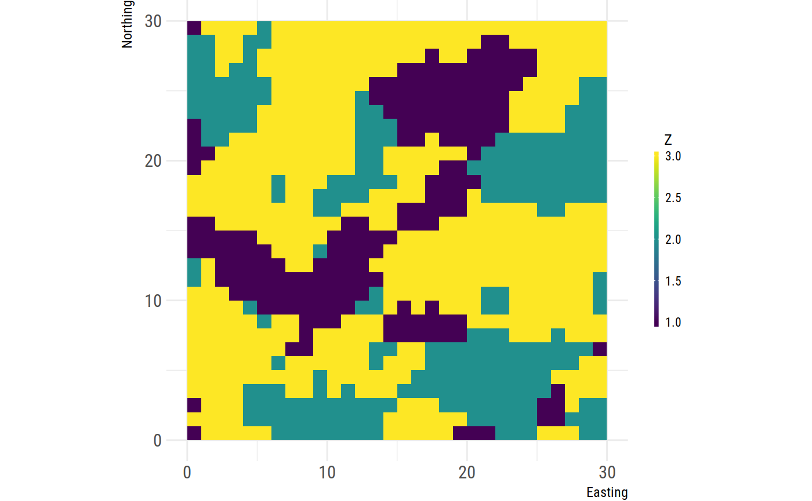
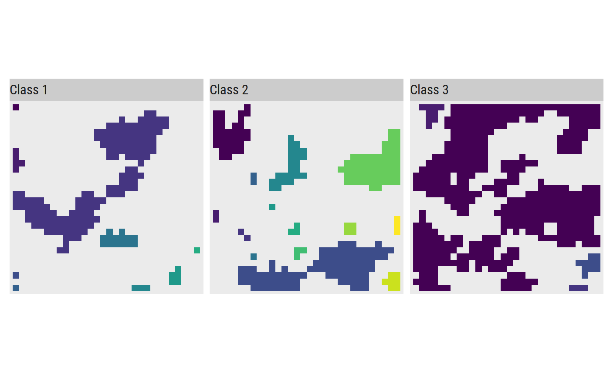

landscapemetrics is an R package for calculating landscape metrics for categorical landscape patterns in a tidy workflow. It offers most of the metrics that are available in the standalone software FRAGSTATS (McGarigal, SA Cushman & Ene, 2012) but is supposed to implement also future (meaningful) categorical landscape metrics.
This package offers support for raster spatial objects and takes RasterLayer, RasterStacks, RasterBricks or lists of RasterLayeras input arguments.
Every function can be used in a piped workflow, as it takes the data always as first argument and returns always a tibble of the same dimension.
Installation
https://www.sportschau.de/fifa-wm-2018/live/videostream-livestream---die-fussball-wm-mit-drei-spielen-100.html You can install landscapemetrics from GitHub with:
Using landscapemetrics
The functions in landscapemetrics are named as a combination of abbreviations describing the scale (patch, class or landscape level) and metric they implement:
# landscapemetrics
lsm_"level"_"metric"
# Patch level
## lsm_p_"metric"
lsm_p_enn()
# Class level
## lsm_c_"metric"
lsm_c_enn()
# Landscape level
## lsm_p_"metric"
lsm_l_enn()Using metric functions
Every function follows the same implementation design, so the usage is quite straight forward:
library(landscapemetrics)
library(tidyverse)
#> ── Attaching packages ──────────────────────────────────── tidyverse 1.2.1 ──
#> ✔ ggplot2 2.2.1 ✔ purrr 0.2.4
#> ✔ tibble 1.4.2 ✔ dplyr 0.7.4
#> ✔ tidyr 0.8.0 ✔ stringr 1.3.1
#> ✔ readr 1.1.1 ✔ forcats 0.3.0
#> ── Conflicts ─────────────────────────────────────── tidyverse_conflicts() ──
#> ✖ dplyr::filter() masks stats::filter()
#> ✖ dplyr::lag() masks stats::lag()
# Landscape raster
landscape
#> class : RasterLayer
#> dimensions : 30, 30, 900 (nrow, ncol, ncell)
#> resolution : 1, 1 (x, y)
#> extent : 0, 30, 0, 30 (xmin, xmax, ymin, ymax)
#> coord. ref. : NA
#> data source : in memory
#> names : clumps
#> values : 1, 3 (min, max)
## plot landscape
landscapetools::util_plot(landscape)
# Calculate Euclidean Nearest-Neighbor Distance on patch level
landscape %>%
lsm_p_enn()
#> # A tibble: 27 x 6
#> layer level class id metric value
#> <int> <chr> <int> <int> <chr> <dbl>
#> 1 1 patch 1 1 euclidean nearest neighbor distance dist… 7
#> 2 1 patch 1 2 euclidean nearest neighbor distance dist… 4
#> 3 1 patch 1 3 euclidean nearest neighbor distance dist… 2.83
#> 4 1 patch 1 4 euclidean nearest neighbor distance dist… 2
#> 5 1 patch 1 5 euclidean nearest neighbor distance dist… 2
#> 6 1 patch 1 6 euclidean nearest neighbor distance dist… 2.83
#> 7 1 patch 1 7 euclidean nearest neighbor distance dist… 4.12
#> 8 1 patch 1 8 euclidean nearest neighbor distance dist… 4.12
#> 9 1 patch 1 9 euclidean nearest neighbor distance dist… 4.24
#> 10 1 patch 2 10 euclidean nearest neighbor distance dist… 4.47
#> # ... with 17 more rowsConnected labelling
landscapemetrics makes internally heavy use of an implementatian of a connected labelling algorithm by Thell Fowler (https://github.com/Thell/ccloutline) and exports an reimplementation of this algorithm:
cclabel_landscape <- landscapemetrics::cclabel(landscape)
landscapetools::util_facetplot(cclabel_landscape, nrow = 1)
Contributing
Bug reports, suggestions for new metrics, and especially code contributions are welcome. Please see CONTRIBUTING.md. Maintainers and contributors must follow this repository’s code of conduct.